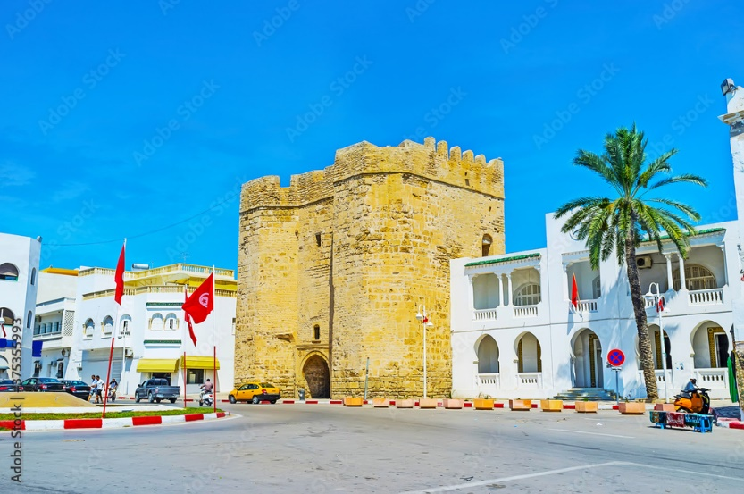

Dessalement et Energies Renouvelables : Retour d’Expériences

Plusieurs possibilités sont offertes pour atterrir à Mahdia (ville FATIMIDE) et ancienne Capitale de la Tunisie.
Le logement sur place en chambre double est inclus dans les frais d'inscription (la priorité de logement est accordée à ceux qui présentent un papier).
Par ailleurs, plusieurs restaurants et magasins sont aux alentours du campus où les participants peuvent faire leurs commissions ainsi que des appartements et studios à louer.